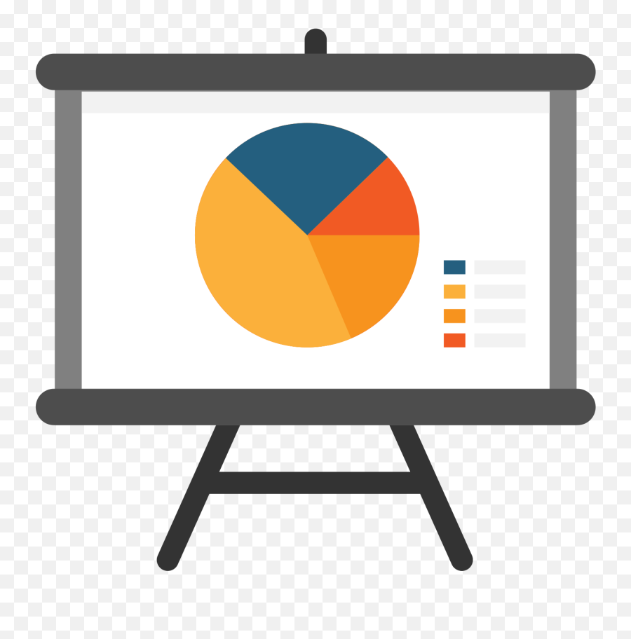

Hobbies & Interests
- Game Development: Codes games in different coding programs, practicing level design and implementing game mechanics.

- Slide Creation: Designs slides for presentations in PowerPoint, improving graphic design and UI interface development.

- Composing: Utilizes FL Studio and FMOD to create adaptive music and sound effect that can be used for websites and computer applications.
- Solving Puzzles: Plays puzzle games and solves crosswords, which helps develop creativity and critical thinking skills.
- Drawing: Creates digital artworks on iPad; learns visual element placement and color theory to further improve UI design.